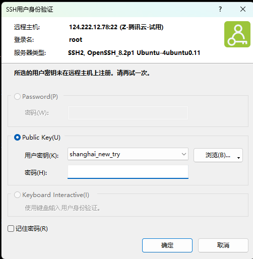
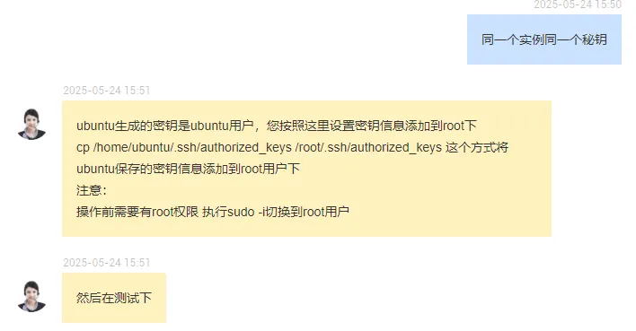

Linux的发行版本可以大体分为两类，一类是商业公司维护的发行版本，一类是社区组织维护的发行版本，前者以著名的Redhat(RHEL)为代表，后者以Debian为代表。
各个发行版关系图


AliOS
一、常用命令
二、LNMP
- yum update
- 安装redis
- yum search redis
- yum info redis.x86_64
- yum install redis
- systemctl start redis.service
- rpm -qa | grep redis
- rpm -ql redis-6.2.7-1.0.2.al8.x86_64
- redis-cli>config get dir
- 安装nginx
- yum search nginx
- yum info nginx
- yum install nginx
- systemctl start nginx
- systemctl stop nginx
- systemctl status nginx
- 安装php
- yum search php
- yum info php.x86_64
- yum install php.x86_64
- sudo yum install -y epel-release
- sudo yum install -y https://rpms.remirepo.net/enterprise/remi-release-7.rpm
- sudo yum install -y yum-utils
- sudo yum-config-manager –enable remi-php74
- 切换：sudo yum-config-manager –enable remi-php72
- 禁用：sudo yum-config-manager –disable remi-php72
- 本质：cat /etc/yum.repos.d/remi-php72.repo
- sudo yum install -y php php-cli php-fpm php-common
- sudo yum install -y php-mysqlnd php-json php-opcache php-gd php-curl php-openssl php-pdo php-redis
- sudo systemctl start php-fpm
- sudo systemctl stop php-fpm
- sudo systemctl enable php-fpm
- 安装php扩展和依赖
- yum install php-pdo php-mysqlnd php-gd
- yum install php-devel
- yum install php-pecl-zip.x86_64
- systemctl restart php-fpm
- 安装mysql
- yum -y install mysql-server –nogpgcheck
- systemctl start mysqld.service
- systemctl status mysqld.service
- cat /var/log/mysql/mysqld.log |grep password，空密码
- ALTER USER USER() IDENTIFIED BY ‘xxx’;
- CREATE USER ‘root’@’%’ IDENTIFIED BY ‘yyy’;
- GRANT ALL PRIVILEGES ON . TO ‘root’@’%’ WITH GRANT OPTION;
- flush privileges;
- 安装redis
- yum search redis
- yum install redis
- systemctl start redis
- 安装php-redis扩展
- cd /usr/local/src
- wget https://pecl.php.net/get/redis-6.0.2.tgz
- tar -zxvf redis-6.0.2.tgz
- cd redis-6.0.2
- phpize
- yum install php-devel，安装成功后继续执行phpize
- ./configure –with-php-config=/usr/bin/php-config
- make && make install
- php –ini
- cd /etc/php.d/
- cp 20-gd.ini 20-redis.ini
- vim 20-redis.ini
- systemctl restart php-fpm
- 安装应用
- 通过ftp上传xg9.9自己开服版本sdk1.zip
- 解压unzip xg9.9自己开服版本sdk1.zip
- yum install unzip
- 配置nginx:/etc/nginx/
1 | server{ |
- 配置本地hosts
- 重启nginx systemctl restart nginx.service
- 浏览器访问：http://test.123.cn/，报502
- 查看nginx错误日志：2024/07/24 10:23:28 [error] 35592#0: *10 connect() failed (111: Connection refused) while connecting to upstream, client: 123.52.10.83, server: test.abyss.cn, request: “GET / HTTP/1.1”, upstream: “fastcgi://127.0.0.1:9000”, host: “test.123.cn”
- 修改为sock方式：fastcgi_pass unix:/run/php-fpm/www.sock;
- No input file specified或者500错误：
- 删除public下的.user.ini
- 404错误：修改目录权限&修改数据库配置&开启pdo
- 查看配置文件：php –ini，缺少对应的扩展则安装
- systemctl restart php-fpm.service
- 报错：Base table or view not found: 1146 Table ‘database.table’ doesn’t exist
- source xxx.sql
- 访问http://test.123.cn/执行安装，最后一步报错
- 修改/app/install/data/xxx.sql，修改为
view_game_idstext default ‘’ COMMENT ‘查看指定的游戏’
- 修改/app/install/data/xxx.sql，修改为
- 500错误：修改data目录权限
- 正式环境：登录客户阿里云账号，创建证书，域名解析，其他都一样
- 安装mongodb
- 安装依赖：yum install compat-openssl10.x86_64
- wget https://fastdl.mongodb.org/linux/mongodb-linux-x86_64-rhel70-4.0.27.tgz
- tar -zxvf mongodb-linux-x86_64-rhel70-4.0.27.tgz
- mv mongodb-linux-x86_64-rhel70-4.0.27 /usr/local/mongodb
- cd /usr/local/mongodb/
- mkdir data data/db data/log
- sudo chmod 666 data/db data/log/
- touch mongodb.conf
1 | # 数据库数据存放目录 |
- sudo vi /etc/profile
1 | export MONGODB_HOME=/usr/local/mongodb |
- source /etc/profile
- mongod -f /usr/local/mongodb/mongodb.conf
- mongo
- use admin
- db.createUser({ user: “abc”, pwd: “123”, roles: [“root”] })
- db.createUser({ user: “def”, pwd: “123”, roles: [“root”] })
- quit()
- sudo vi /etc/mongod.conf
1 | security: |
- 重启服务，先kill进程，再启动：mongod -f /usr/local/mongodb/mongodb.conf
- 登录：mongo -u abc -p 123 –authenticationDatabase admin
- db.auth(‘abc’,’123’)
- 安装php-mongo
- cd /usr/local/src
- wget https://pecl.php.net/get/mongodb-1.19.3.tgz
- tar -zxvf mongodb-1.19.3.tgz
- cd mongodb-1.19.3
- phpize
- ./configure –with-php-config=/usr/bin/php-config
- make && make install，安装成功：Installing shared extensions: /usr/lib64/php/modules/
- ls /usr/lib64/php/modules/
- php –ini
- cd /etc/php.d/
- cp 20-redis.ini 20-mongo.ini
- vim 20-mongo.ini，加入extension=mongodb
- systemctl restart php-fpm
- php -m
- 初始化数据和修改代码
- mongo -u abc -p 123 –authenticationDatabase admin
- use database_name
- 复制mongo.js的内容在命令行执行
- 修改mongo数据库连接
- 香港迁移北京(手机端https链接不解析)
- 登录香港服务器
- 切换到代码目录
- 打压缩包：tar -cvf aaa.tar.gz aaa
- 下载到本地
- 登录北京服务器
- mkdir -p /home/www/
- 上传到北京服务器
- yum install nginx
- systemctl start nginx
- yum install php.x86_64
- systemctl start php-fpm
- yum install php-pdo php-mysqlnd php-gd php-devel
- yum install redis
- systemctl start redis
- yum install mysql mysql-server
- systemctl start mysqld.service
- CREATE USER ‘root’@’%’ IDENTIFIED BY ‘123’;
- GRANT ALL PRIVILEGES ON . TO ‘root’@’%’ WITH GRANT OPTION;
- flush privileges;
- systemctl restart mysqld.service
- yum install unzip
- 修改代码data/conf/database.php
- 修改权限public、data
- sql-mode=NO_ENGINE_SUBSTITUTION,STRICT_TRANS_TABLES
CentOS
一、常用命令
- 查找包：yum search package_name
- 安装包：yum install package_name
- 查看已安装
- yum list installed
- rpm -qa
- dnf list –installed
- 查看已安装的特定包
- yum list installed | grep httpd
- rpm -qa | grep httpd
- 查看包信息
- yum info package-name
- rpm -qi package-name
- 查看包安装路径：rpm -ql package-name
- 查看包依赖关系
- yum deplist package-name
- rpm -q –requires package-name
- dnf deplist package_name
- 卸载
- yum remove package_name
*yum remove package_name –nodeps - rpm -e package_name
- rpm -e –nodeps
- rpm -e –nodeps
- dnf remove package_name
二、LNMP
yum update
安装nginx
- yum search nginx
- yum install nginx
- systemctl start nginx.service
- systemctl stop nginx.service
- sudo systemctl enable nginx
- ps -ef|grep nginx
- 访问：http://8.222.168.167/
- 异常：去阿里云后台开启80端口
- 查看应用
- yum list installed|grep nginx
- rpm -ql nginx.x86_64
- 安装php
- yum search php
- yum info php.x86_64，版本太旧
- sudo yum install -y epel-release
- sudo yum install -y https://rpms.remirepo.net/enterprise/remi-release-7.rpm
- sudo yum install -y yum-utils
- sudo yum-config-manager –enable remi-php81
- 切换：sudo yum-config-manager –enable remi-php72
- 禁用：sudo yum-config-manager –disable remi-php72
- 本质：cat /etc/yum.repos.d/remi-php72.repo
- sudo yum install -y php php-cli php-fpm php-common php-mysqlnd php-json php-opcache php-gd php-curl php-openssl php-pdo php-redis
- sudo systemctl start php-fpm
- sudo systemctl stop php-fpm
- sudo systemctl enable php-fpm
- 安装composer
- php -r “copy(‘https://getcomposer.org/installer', ‘composer-setup.php’);”
- php -r “if (hash_file(‘sha384’, ‘composer-setup.php’) === ‘dac665fdc30fdd8ec78b38b9800061b4150413ff2e3b6f88543c636f7cd84f6db9189d43a81e5503cda447da73c7e5b6’) { echo ‘Installer verified’; } else { echo ‘Installer corrupt’; unlink(‘composer-setup.php’); } echo PHP_EOL;”
- php composer-setup.php
- php -r “unlink(‘composer-setup.php’);”
- sudo mv composer.phar /usr/local/bin/composer
- 安装mysql
- yum search mysql
- 卸载mariadb和MySQL
- rpm -qa|grep mariadb
- rpm -e –nodeps mariadb-server
- rpm -e –nodeps mariadb
- rpm -e –nodeps mariadb-libs
- rpm -qa|grep mysql
- rpm -e –nodeps xxx
- rpm -qa|grep mariadb
- 查看系统版本：cat /etc/redhat-release
- 下载yum源：wget https://dev.mysql.com/get/mysql80-community-release-el7-1.noarch.rpm，详见yum源列表
- {mysql80}-community-release-{platform}-{version-number}.noarch.rpm说明
- {mysql80}：MySQL版本
- {platform}：平台(系统)号，⽤来描述系统的版本
- {version-number}：MySQL仓库配置RPM包的版本号
- {mysql80}-community-release-{platform}-{version-number}.noarch.rpm说明
- 安装yum源：sudo rpm -Uvh mysql80-community-release-el7-1.noarch.rpm
- 会在/etc/yum.repos.d/目录下生成两个repo文件：mysql-community.repo及mysql-community-source.repo
- 查看可安装的MySQL：yum repolist enabled | grep “mysql”
- 查看所有MySQL版本：yum repolist all | grep mysql
- 切换MySQL版本：
- 通过yum-config-manager命令
- sudo yum-config-manager –disable mysql57-community
- sudo yum-config-manager –enable mysql80-community
- 直接修改repo文件
- 通过yum-config-manager命令
- 再次查看：yum repolist all | grep mysql
- vim /etc/yum.repos.d/mysql-community.repo，修改：gpgcheck=0
- 安装MySQL：sudo yum install mysql-community-server
- 启动MySQL：sudo systemctl start mysqld.service
- 查看MySQL：sudo systemctl status mysqld.service
- 停止MySQL：sudo systemctl stop mysqld.service
- 重启MySQL：sudo systemctl restart mysqld.service
- 设置开机启动：
- systemctl enable mysqld
- systemctl daemon-reload
- 查看默认密码：sudo grep ‘temporary password’ /var/log/mysqld.log，临时密码：asdfasdfa
- 使用默认密码：mysql -uroot -p
- 修改默认密码：ALTER USER ‘root’@’localhost’ IDENTIFIED BY ‘dddd’;
- 查看访问权限：select User,Host from mysql.user;
- 设置远程访问：
- CREATE USER ‘root’@’%’ IDENTIFIED BY ‘eeee’;
- GRANT ALL PRIVILEGES ON . TO ‘root’@’%’ WITH GRANT OPTION;
- flush privileges;
- 安装redis
- yum install redis
- systemctl start redis.service
Ubuntu
一、常用命令
二、MySQL安装
apt-get update
apt-get install mysql-server
systemctl status mysql.service
mysql –version
mysql -uroot -p
- 初始密码为空
- 创建root远程登录用户
- CREATE USER ‘root’@’%’ IDENTIFIED BY ‘aaaa’;
- GRANT ALL PRIVILEGES ON . TO ‘root’@’%’ WITH GRANT OPTION;
- REVOKE ALL PRIVILEGES, GRANT OPTION FROM test;
- FLUSH PRIVILEGES;
- 修改本地root用户初始密码
- ALTER USER ‘root’@’localhost’ IDENTIFIED BY ‘aaaa’;
- FLUSH PRIVILEGES;
- 不生效
- ALTER USER ‘root’@’localhost’ IDENTIFIED WITH mysql_native_password BY ‘bbbb’;
- FLUSH PRIVILEGES;
- 查看安装位置
- dpkg -L mysql-server
- apt list –installed | grep mysql-server
- 查看配置文件
- SHOW VARIABLES LIKE ‘config_file’;
- mysql –help | grep “Default options”
Ubuntu24/22/20/18秘钥登录问题
一、问题
- 使用Xshell8通过秘钥登录实例报错

处理
- vim /etc/ssh/sshd_config，取消注释：PubkeyAuthentication yes
- systemctl restart ssh.service
- 还是报错
- sudo sshd -T | egrep “pubkey”
- vim /etc/ssh/sshd_config，添加配置：PubkeyAcceptedKeyTypes +ssh-rsa
- systemctl restart ssh.service
- 还是报错
- 在腾讯云创建新秘钥，重新绑定
- 还是报错
- 更换其他操作系统，可以正常登录
- cat ~/.ssh/authorized_keys，记录此值
- 再次重装为Ubuntu24
- vim ~/.ssh/authorized_keys，将第一步的值写入此文件，保存
- 再次登录，成功
- 咨询客服
- cp /home/ubuntu/.ssh/authorized_keys /root/.ssh/authorized_keys

- vim /etc/ssh/sshd_config，取消注释：PubkeyAuthentication yes